Rojo
Temperatura: Cálido
Olor: Frutal, floral, picante
Sabor: Apetecible (Frutas, carne)
Un espacio de intercambio donde la cultura, el color y la ilustración convergen para contar historias a través de la experiencia creativa.
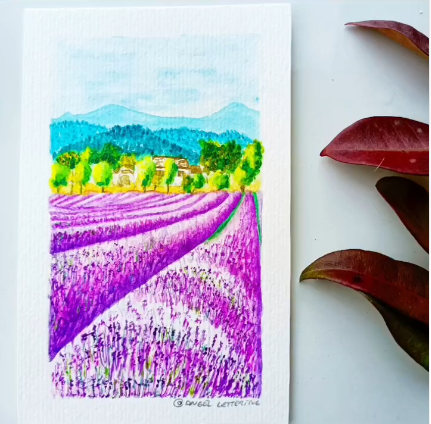
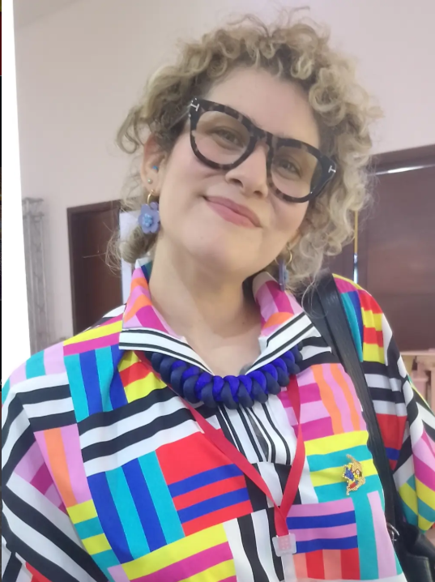
"Entrelazo la investigación en campo con la creación visual, entendiendo la ilustración como un ejercicio de mapeo social. Mediante la superposición de capas y la delicadeza de la acuarela, documento la complejidad de las identidades territoriales, transformando la memoria en una narrativa visual coherente y profunda."
Programa del Evento
Así vivimos el día de la conferencia • 10:00 AM
Acreditación, montaje y bienvenida institucional de la Universidad ECCI.
Teoría del color, psicología visual y aplicaciones profesionales.
Diálogo abierto, casos prácticos y debate académico.
Certificados y espacio de networking con la conferencista.
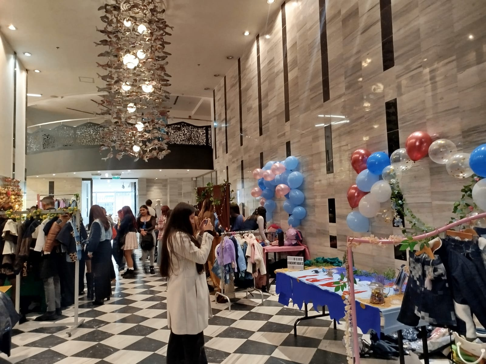
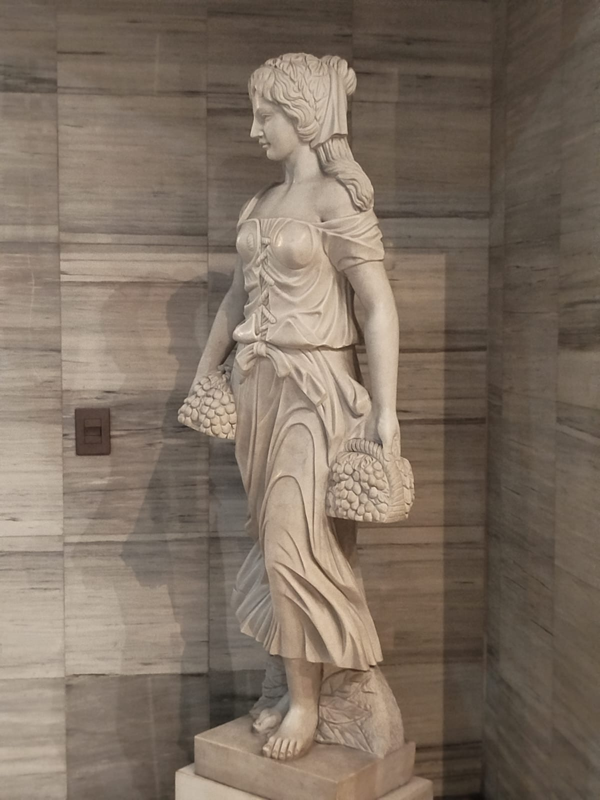
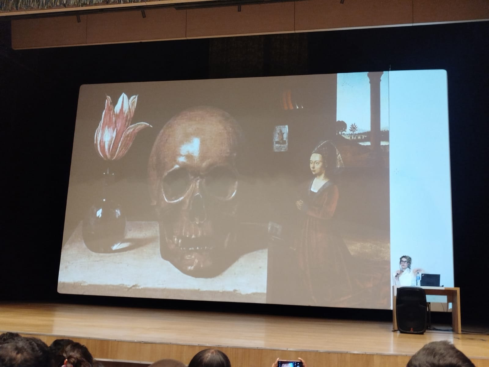
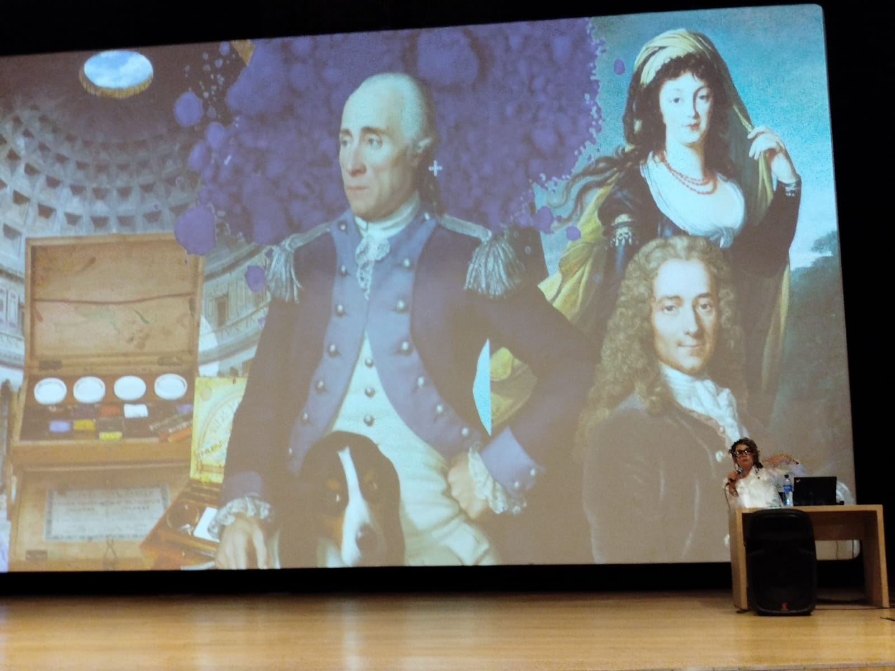
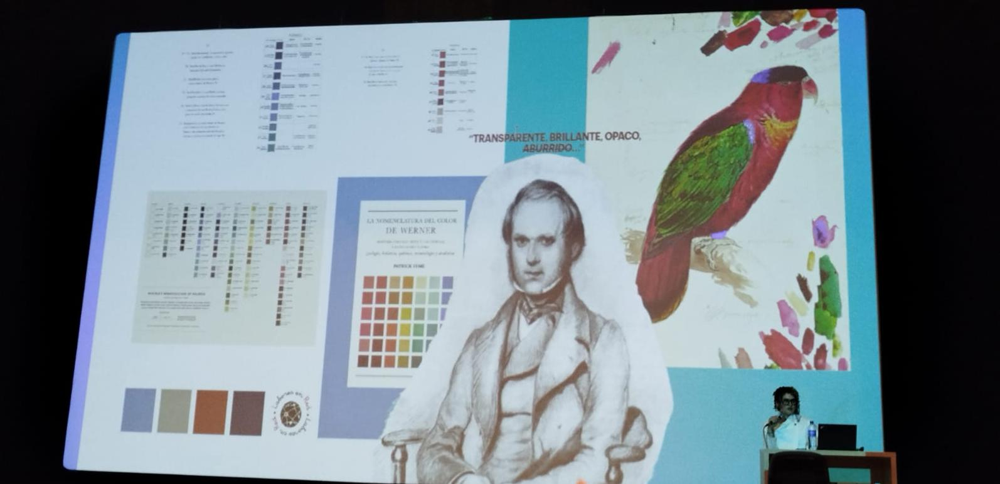
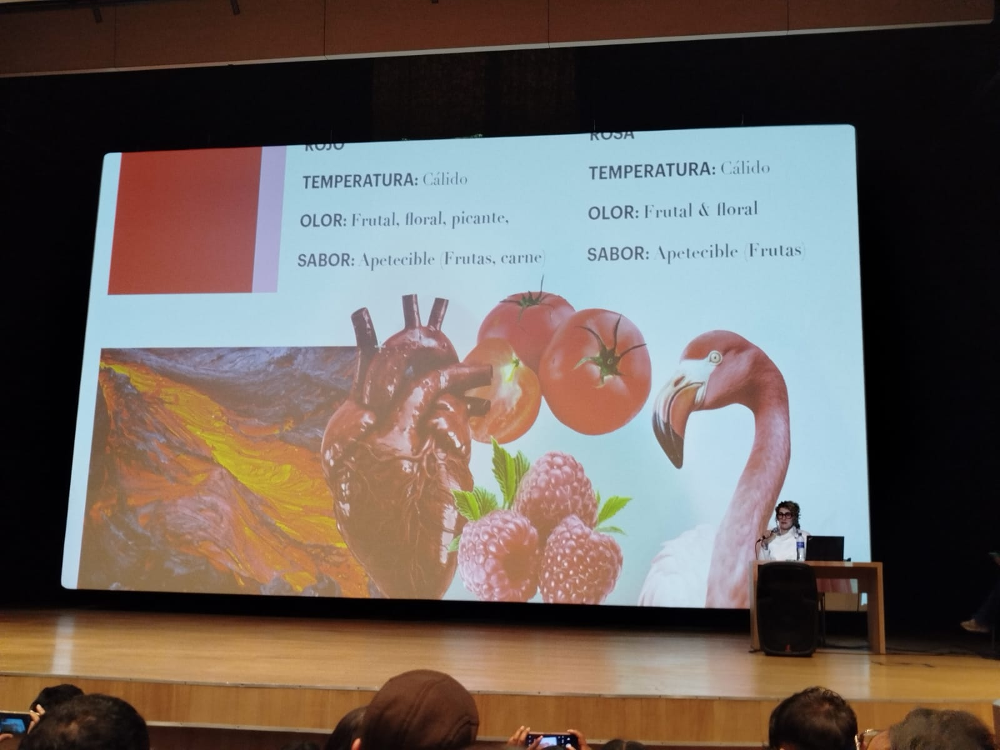
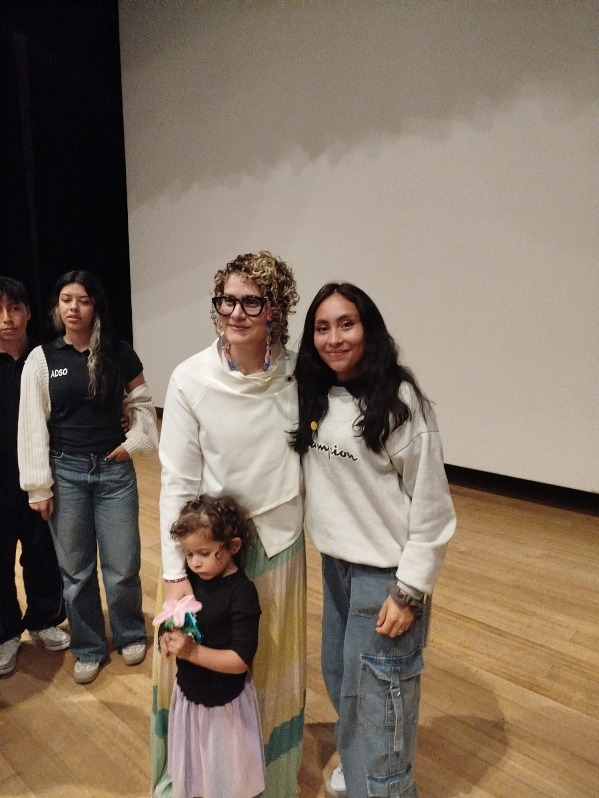
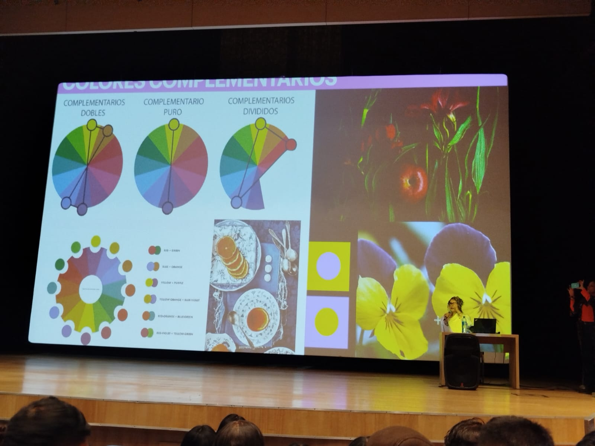
"Para Sara Viloria, el círculo cromático es mucho más que una rueda de pigmentos; es la gramática del territorio. Es el sistema relacional que nos permite traducir la complejidad del entorno a un lenguaje visual, equilibrando la tensión entre el color y la forma".
El color como coordenada sobre el lienzo.
Armonías como capas estructurales.
La construcción espacial de una obra en acuarela depende enteramente del dominio técnico de sus propiedades fundamentales.
Transiciones entre matices puros ejemplificando la variedad de pigmentos naturales.
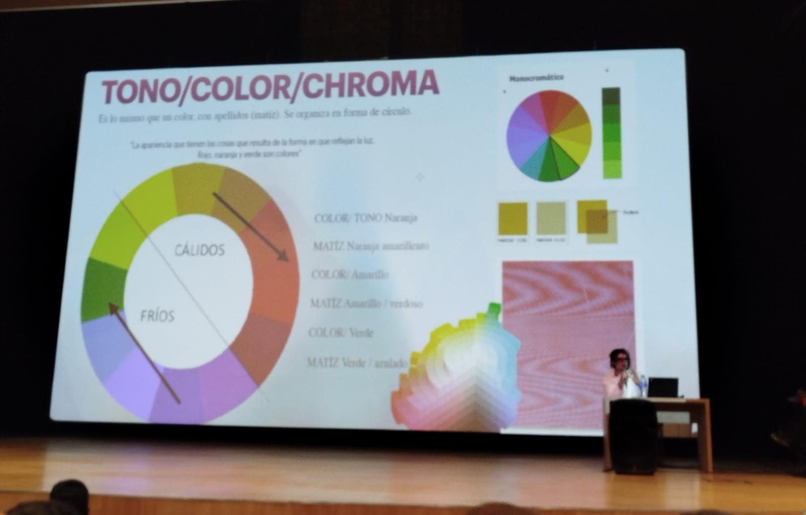
Representa el grado de claridad u oscuridad. Fundamental para estructurar volumen y profundidad.
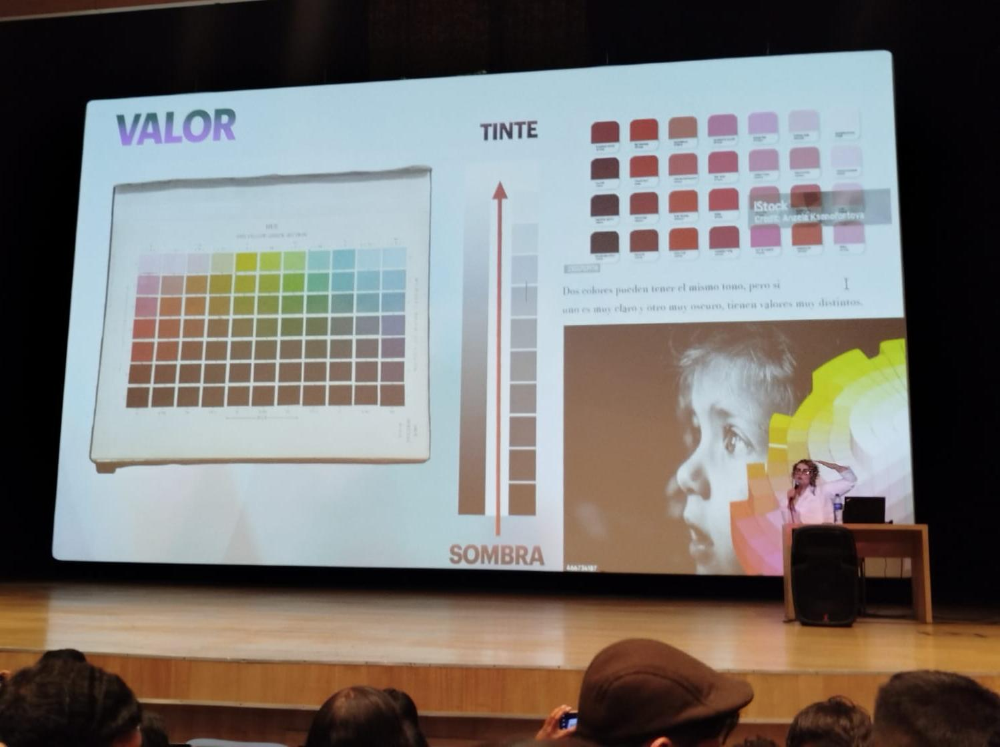
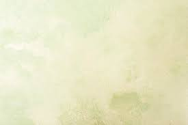
El estudio de cómo los matices específicos influyen en la emoción humana, la percepción y la toma de decisiones es fundamental en mi práctica. Exploro el color no solo como una elección estética, sino como un lenguaje que evoca sentimientos específicos, comunica mensajes sutiles y crea una narrativa dentro del diseño.
— Análisis de Temperatura, Olor y Sabor —
El color trasciende la mera percepción visual para convertirse en una experiencia multisensorial. A través del análisis de Sara Viloria, exploramos cómo tonalidades específicas como el rojo y el rosa actúan sobre nuestra psicología, condicionando no solo nuestra respuesta térmica, sino también despertando asociaciones olfativas y gustativas profundas. Este estudio examina la capacidad del color para evocar lo 'apetecible', transformando pigmentos en conceptos capaces de estimular nuestros sentidos de manera instintiva.
Temperatura: Cálido
Olor: Frutal, floral, picante
Sabor: Apetecible (Frutas, carne)
Temperatura: Cálido
Olor: Frutal & floral
Sabor: Apetecible (Frutas)
La **armonía de color** es el arte de coordinar los diferentes valores y matices que coexisten en una composición para generar una respuesta estética equilibrada. No se trata simplemente de combinar tonos agradables, sino de estructurar relaciones cromáticas con una lógica visual interna clara.
En el desarrollo de cartografías e ilustraciones territoriales, Sara utiliza la armonía como un conductor del orden interno. Mediante transiciones fluidas o contrastes calculados en acuarela, logra que la complejidad cultural de una comunidad sea legible, balanceando la tensión y el reposo en cada rincón del papel.
Marco Estético
La armonía de color es el arte de coordinar valores y matices para generar una respuesta estética equilibrada. Se trata de estructurar relaciones cromáticas con una lógica visual interna clara, basada en principios físicos y psicológicos.
El modelo RGB utiliza luz roja, verde y azul para crear colores en pantallas digitales. Al mezclar estas tres luces primarias a su máxima intensidad, obtenemos la luz blanca. Es el estándar para el diseño web, software y fotografía digital.
El modelo CMYK emplea pigmentos cian, magenta, amarillo y negro para la impresión física. Las tintas actúan "restando" la luz que refleja el papel; la suma de todas genera el negro. Es el sistema esencial para editorial y artes gráficas.
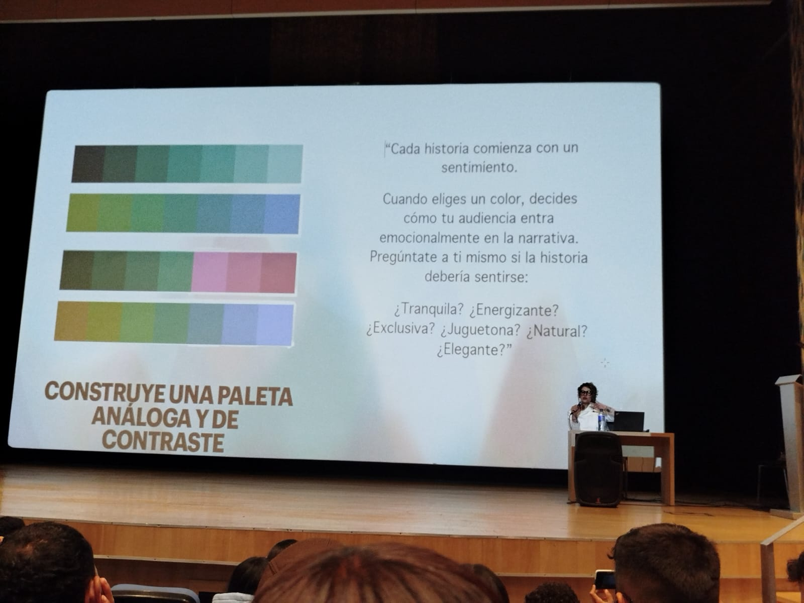
Rojo, Amarillo y Azul (modelo RYB tradicional). Son la base de toda mezcla pigmentaria. No pueden obtenerse mezclando otros colores.
Naranja (rojo+amarillo), Verde (amarillo+azul), Morado (azul+rojo). Resultan de mezclar dos colores primarios en proporciones iguales.
Rojo-naranja, Amarillo-verde, Azul-verde, etc. Se obtienen mezclando un color primario con un secundario adyacente.

Perspectiva
SARA VILORIA SOBRE LA DIVERSIÓN LINGÜÍSTICA Y EL CONTEXTO.
"En un mundo interconectado, a menudo asumimos que la comunicación es uniforme. Sin embargo, mi investigación y práctica visual demuestran que el lenguaje no es una constante universal, sino un constructo social profundamente arraigado en el territorio, la cultura y la psicología individual. Lo que una palabra o símbolo significa en un contexto puede ser completamente diferente en otro. Por lo tanto, para una comunicación efectiva, debemos decodificar y respetar estas particularidades locales en lugar de imponer estándares globales."
En la obra de Sara, el color trasciende lo decorativo para convertirse en un vehículo narrativo. Cada elección cromática responde a una intención psicológica, cultural y territorial que establece un diálogo directo con el observador.
Intención: Cohesión y calma orgánica. Al utilizar tonos vecinos, evoca la continuidad de la naturaleza.
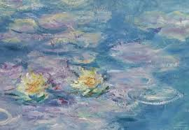
Intención: Dinamismo y enfoque dramático. Colores opuestos que rompen la monotonía creando tensión visual.
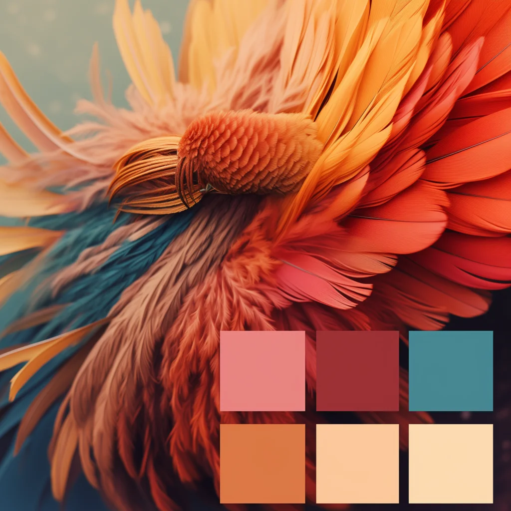
Intención: Introspección y pureza. La atención se concentra enteramente en la textura y la luz.
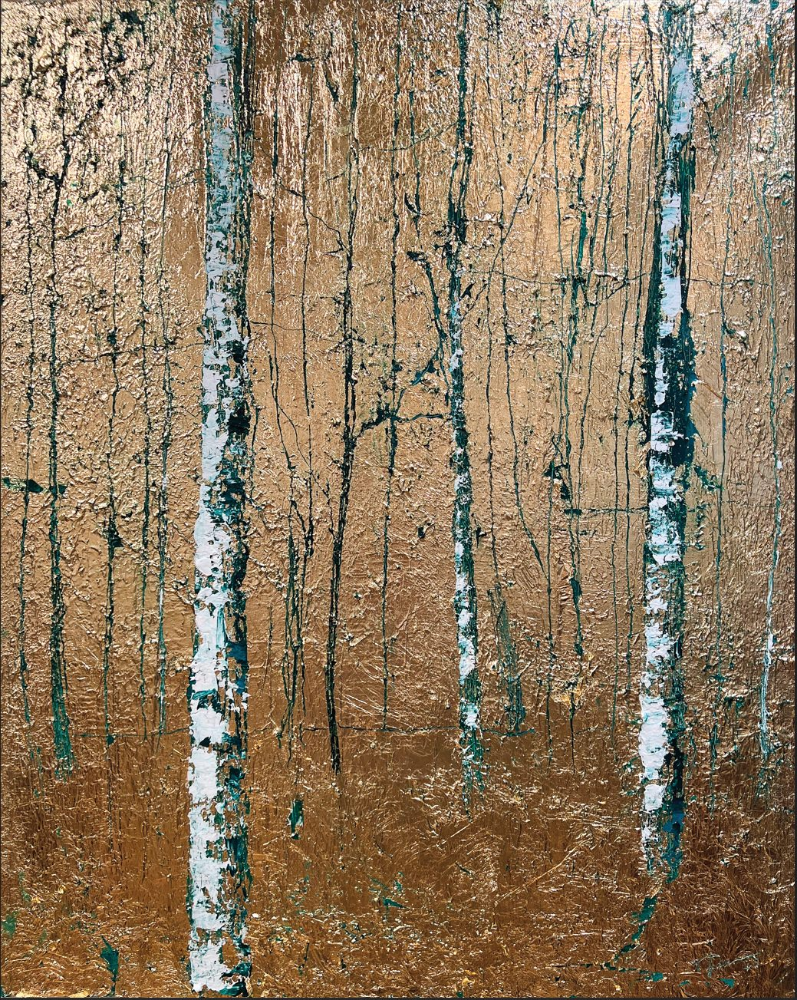
Sistema conceptual que organiza las relaciones entre color, territorio y narrativa visual.
Herramienta visual que representa las relaciones entre los colores y sus armonías.
Método utilizado para interpretar composiciones visuales, símbolos y mensajes artísticos.
Organización de elementos visuales para crear equilibrio y significado dentro de una composición.
Capacidad de una obra para comunicar múltiples capas de interpretación y significado.
Propiedades de la luz que influyen en el color, el contraste y la percepción visual.
Identidad pura de un color que lo diferencia de los demás.
Grado de claridad u oscuridad que aporta profundidad y volumen.
Estudio de cómo los colores influyen en las emociones, el comportamiento y la percepción.
Interpretación personal del color basada en experiencias, cultura y contexto.
Relación equilibrada entre colores que genera unidad visual.
Disciplina que estudia las relaciones entre colores y sus efectos visuales.
Sistema de comunicación basado en formas, símbolos, imágenes y colores.
Armonía creada mediante la combinación de colores vecinos en el círculo cromático.
Equilibrio visual logrado mediante el uso de colores opuestos.
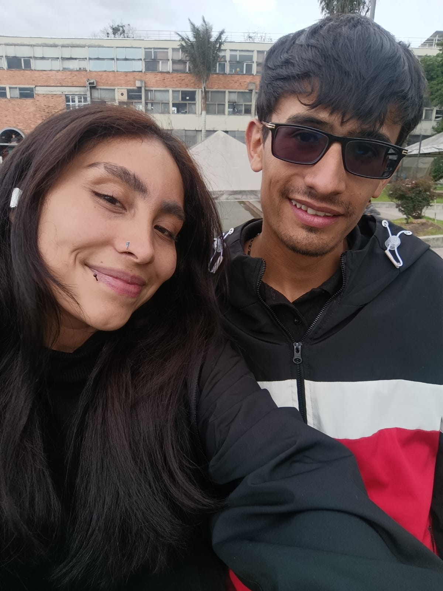
Participar en esta cumbre fue una experiencia transformadora. Descubrí que el color trasciende la estética, actuando como una herramienta estratégica para la comunicación psicológica y la usabilidad. Este evento reforzó la importancia del trabajo multidisciplinario, demostrando que la programación y el diseño visual son fuerzas complementarias.